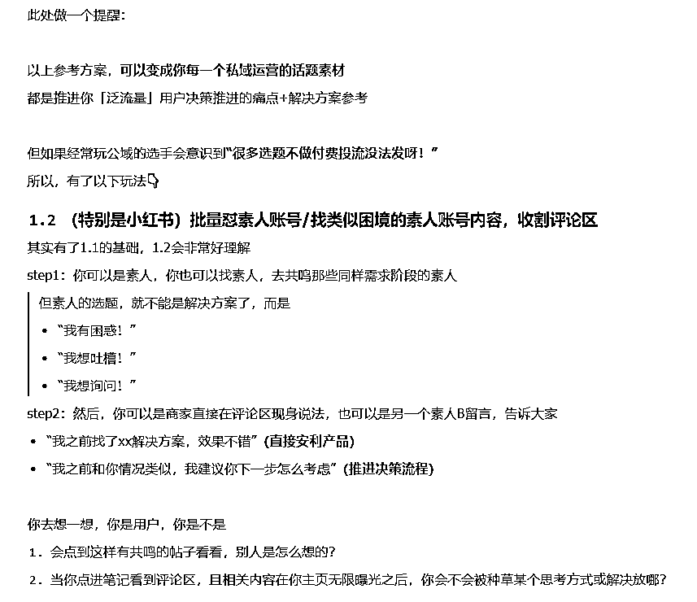
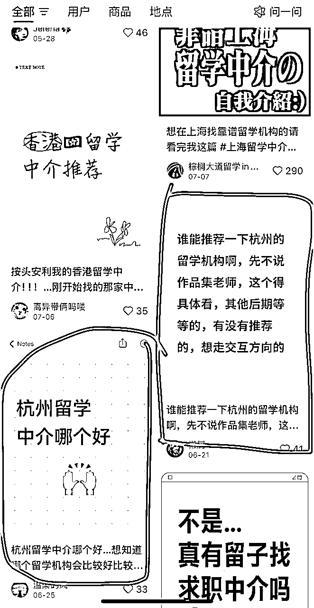

来源：https://fo7m2lpjse.feishu.cn/docx/OXpudAQkQo01Q2xknR3cmgQJn8d
大家好，我是鱼饼
8年市场，5年培训经验，喜欢琢磨底层逻辑和思维模型
这是我之前的两篇精华帖：
红海市场颠覆互联网获客打法，从 0 到 1 杀到 20%的市场份额：https://t.zsxq.com/LEpxr
带队单日引流1000+，1年成交额1000万的秘密（获客底层逻辑起底）：https://t.zsxq.com/BMopi
最近一年在沉淀一些业务模型，并且做聚焦和断舍离，有段时间没看生财内容了，感谢生财团队邀请，来聊聊私域这回事。
我不会单独切公域和私域的区别，因为你看一些公域直播电商也有高转化，背后底层还是用户的决策逻辑和信任链条的建立。
私域的重要性和区别点是我们和用户的曝光和触达频次更高（微信打开率更高），以及用户流失率低（相比互联网公域漫天的同行，私域的同行肯定更有限）
我个人理解，私域销售转化的本质是「帮用户看清自己脸上沾有皱纹」+「构建选取去皱产品的决策逻辑」+「用户信任你的纸巾性价比极高又对症下药」
没有意识到自己脸上有皱纹或者不觉得脸上皱纹是个问题的人，是不会需要去皱抗衰产品的。
你哪怕有超级多认证，但是用户不相信你的产品能去皱抗衰，也不会想要买你的产品的。
做私域的人，一定听过“泛流量”和“精准流量”两个概念。
大家对精准流量比泛流量好转化也有概念。
但如果我追问：泛流量精准一点点，算是精准流量吗？精准流量泛一点点，算是泛流量吗？
你会发现很难定义了。
进入私域的泛流量能慢慢变成精准流量吗？泛流量和精准流量里面能不能做不同的用户分级分类？
需求觉醒阶段的用户，我定义为「泛流量」
竞品比对阶段的用户，我定义为「精准流量」
很明显，用户在比对竞品时，显然比刚产生我“可能有这个问题”时，付费意愿要高
所以我的分享，核心就围绕两大阶段来说明：
需求觉醒阶段的用户，在思考问题时，大概率都会走过这几个阶段：
用户以为自己没问题
用户认为的问题不是真问题
用户觉得问题不严重
用户认为问题好解决
用户没有清晰的执行路径
用户被低效模式绑架
而竞品比较阶段的用户，在思考问题时，只在乎「投入产出比」
他们的关键问题是：
商家视角：我们的优势是什么？
商家视角：用户是做充分了解决策的，还是黑箱状态下决策的？
商家视角：用户需求和我们的产品特色点是否匹配？
商家视角：怎么给用户建立充分信任？
不难发现，123基本是客观的，而用户决策阶段的关键难点在「信任」
我们举几个例子，帮助大家对我的模型拆解有个感知：
如何理解第一部分「用户需求确认的链路」？
思考以下场景中，什么时候你更容易做买单动作？
再放第二部分的结构拆解（用户视角）：
如何理解第二部分「信任的多维度」？
思考以下场景中，什么时候你更容易做买单动作？
好，我们逐个阶段来看：
我们先拆解，再基于拆解看案例应用
用户以为自己没问题
类似疫情期间不愿意核酸检测的人，认为自己本身多喝水多运动，偶尔的咳嗽发热应该就是日常的感冒，不会需要特意检测和准备特效药
以留学行业为例，典型情况是：大二学生小A觉得大学生活按部就班，上课、考试、参加社团，没觉得有什么“问题”。他没有主动思考过毕业后的竞争力或未来发展路径的差异，认为顺其自然就好，结果大三暑假火急火燎说想留学，履历和成绩都不够，只能无奈GAP
针对这类用户，Ta前期消费意愿（要早点找留学机构）的教育成本是很高的，但是在萌生和确认需求那一下，极其容易“病急乱投医”。
因为这类用户没有规划意识，是行业里面好签，但又容易退费的一类用户。
成交难点在于「让对方意识到自己有问题」
对应到我们案例要解决的障碍在于：
针对这类情况，你要做的是：别教育，只揭露真相。
用户认为的问题不是真问题
我们自己看病肯定也经历过，你说你肚子疼拉稀，描述自己前天吃了啥吃了啥，认为自己是细菌性感染。实际上医生会让你检测，最后检测结果揭示的可能是“你只是着凉了”。
举例，某普通一本高校学生小B，看了网上很多人说出国前还没考出雅思很焦虑，所以全身心在准备雅思，结果忽略了实习等履历，最后因为履历很薄弱没法拿到很好的offer
这类用户的处理关键是「确认目标」+「专业评估」，每一步都很重要
用户要么表达宽泛，要么表达错误，而我们要通过全貌评估来精准定位问题
用户觉得问题不严重
还是拿医院为例，很典型会有人觉得熬熬能熬过去，没必要花这个冤枉钱找人、咨询、诊断、买药。
换言之，这个事情的价值在他眼里不高，所以这种类型的用户，关键是提升这件事的价值评估
举例，缺乏规划和价值评估的大学生非常典型：
这类用户的处理关键是「算账」，且最好的算账方式是给用户算「如果不做会产生的损失」
——本可属于我的东西我没拿到是很难受的
用户认为问题好解决
常见于超自信或者有规划的人群，这类人不适合“人教人”，更适合“事教人一遍就会”
这类客户往往出现在有经验（但经验不可迁移）的人群中，比如：
除了等他们碰壁再找上来之后，还有两种办法：
用户没有清晰的执行路径
我已经清楚了我有需求，且问题是什么，我知道不应该自己解决，更应该找人解决，那我找什么人？按照什么标准找人？
举例，留学生找留学中介，系统拆解有好几个问题：
这类用户的最佳处理办法是「信任人设」+「构建决策逻辑和标准」
——你是商家身份，你可能怎么讲都没用，但是学长学姐有用/老师有用，因为用户眼里“无商不奸”“王婆卖瓜”
——你只一味讲自己好也没用，你要告诉人家，为什么好？
用户被低效模式绑架
比如有问题，用户习惯先问AI，先在小红书上搜，先问某个KOL，先下意识有个xx判断，这些习惯性动作，可能会成为“成交的阻力”
举例，
这类用户的处理关键是「破固有习惯or固有认知」+「讲解为什么」
总结成表格见下：
大家去看很多私域运营的课程，社群要放什么、朋友圈要放什么，其实本质是推动用户决策的流程
两类解决方案：
我们一个个来看：
我们刚刚是不是在这个图汇总了“解决方法本质”，我们再把表格逻辑衍生下，落实到解决方案参考
此处做一个提醒：
以上参考方案，可以变成你每一个私域运营的话题素材
都是推进你「泛流量」用户决策推进的痛点+解决方案参考
但如果经常玩公域的选手会意识到“很多选题不做付费投流没法发呀！”
所以，有了以下玩法👇
类似于现在很多人在玩的A种B收
其实有了1.1的基础，1.2会非常好理解
step1：你可以是素人，你也可以找素人，去共鸣那些同样需求阶段的素人
但素人的选题，就不能是解决方案了，而是
step2：然后，你可以是商家直接在评论区现身说法，也可以是另一个素人B留言，告诉大家
你去想一想，你是用户，你是不是：
同样，我们先拆解
拆解完底层逻辑，再看迁移应用
刚随意加上微信的人来给我推销产品，我第一下就是好奇“动机是啥？”
路上一个美女来加微信，有些男同胞也会好奇“不会嘎腰子吧？还是什么钓鱼执法的新套路？还是我老婆派来试探我的？”
一个留学中介给我规划，你说的再有道理，我心里都是想着“你要赚我钱”。
因为现在吹牛太多了，都或多或少在各行各业当过韭菜。
我不要听你嘴巴吹，我需要听你逻辑论证下，我考察下到底你的承诺有没有可能性
所以我买衣服要看下你说速干面料，那面料是不是聚酯纤维的。
所以我看病要关注下医生的水平，买电子产品要看下品牌，因为有些能力没法直接量化或者逻辑检验，所以我只能信一个背书。
甚至现在背书很多人也不信了，只肯用自己的逻辑去检验，不吻合或者不了解的，我就不买或者非常谨慎。
像是留学这种非标行业更是如此，你说你服务行业内最佳，我没法检验，因为每个人都可以这么说。
你承诺了，还不够，你没做出结果。你都是空头支票。
所以为什么电商要看客户好评，为什么像留学这样的非标行业要看案例，因为你做出结果来，我信任度才高。
但这里和第一个动机又有关，因为好评和案例是可以捏造和刷的。
我不知道你的好评是不是真实客户，我不知道你的案例是不是随便从友商那里拿的。
而且用户心理如果发现一个产品“没有差评”，其实是很慌的。
所以我们电商平台为了确认产品真实性，我们其实会喜欢「看差评」
看差评的背后，是我对于你结果真实性的检验
看差评除了是看实际结果，背后也是用户一个心理叫「风险控制」
就是“如果最坏的情况下，怎么办？”
以上是用户在「相信」问题上的决策逻辑
我们一定要明白，用户加上微信那一下的品牌印象和公域/转介绍形成的印象一定是一以贯之的。
所以，我们在公域的布局上，是不是可以大量围绕这几个维度做这些事情：
你是商家说自己好，我不信，但是你是下游产业（一定会对上游产业挑刺的）说好，我会信
你是商家说自己好，我不信，但是你是离职人员，你的分享有说到好的有说到不好的，我会信
你是商家说自己好，我不信，但是你是真实用户，你的反馈有说到好的有说到不好的，我会信
你是商家说自己好，我不信，我就认第三方背书，我就非得听听你的交付逻辑，我会信
你私域都是成交案例，我不信，但是我看你有理有据地拒绝了几个人，我有点信

大家在理解信任建立的维度基础上，再来看上面这段，去结合人设、结合用户需求环节，你的用户来了，绝对嘎嘎信任
以截流为例：
step1：识别该帖子的发帖用户和关注帖子的用户，在需求觉醒阶段还是产品决策阶段？
step2：基于阶段用高信任的身份，去给到顺承决策链路的建议

step1：识别该帖子的发帖用户和关注帖子的用户，在需求觉醒阶段还是产品决策阶段？
step2：基于阶段用高信任的身份，去给到顺承决策链路的建议
见这个表哈哈哈哈，不多提了
你通过用户需求分析，可以产生无限内容，对标只是一时，原理推演是无限